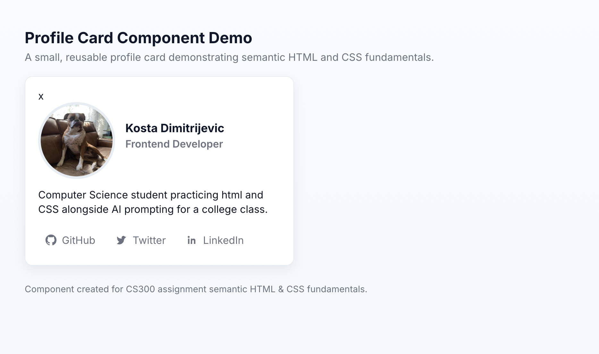

Profile Card Project
A reusable HTML and CSS component demonstrating understanding of semantic HTML, typography and the CSS box model. Building this project helped reinforce the fundamentals of layout and reusable UI components.
HTML • CSS